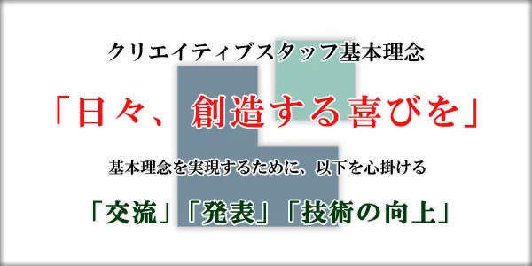

クリエイティブスタッフについて
クリエイティブスタッフは、東京工科大学所属の文化系公認サークルです。
マルチメディアコンテンツの制作を通して技能の向上を目指し、
ゲームプログラミングを中心とした創作活動を行っています。
-
基本理念

-
活動概要
みんなで、あるいは個人でゲームを作ります！ 経験者の先輩方から作り方を教わる講習もあります 夏休み以降は、大学の文化祭である秋の紅華祭やコミケ、春の新入生歓迎会を目標に作品の制作に取り組みます
年間ロードマップ
読み込み中...
イベント
-
夏コミ・冬コミ
コミケに参加しています！（8月、12月）
以前はCDを頒布していましたが、最近はゲームのダウンロードURLを記載した名刺を配ることが多いです -
紅華祭
東京工科大学の文化祭です！（10月）
教室にてゲームを展示するほか、ついでに屋台で食べ物とかも売ります -
交流サーバー
広島大GSD主宰の、他大学ゲームサークルとの交流サーバーに加入しています！（希望者は参加可能）
一週間ゲームジャムやみんなでメドレーを作るサウンドジャムなどが不定期に開催されます
-
講習
諸学者向けの講習を開いています！（5月ぐらい～）
教えられるメンバーによって微妙に変わりますが、「イラスト講習」「音楽講習」「Unity講習」「3DCG講習」「プランナー講習」が主になります -
制作大会
新しく始める試みです！
みんなでお題を出し合って絵をかいたり、曲を作ったり…… -
共同制作
部員同士でチームを作ってゲーム制作します！
驚くほど高い蒸発率がウリです